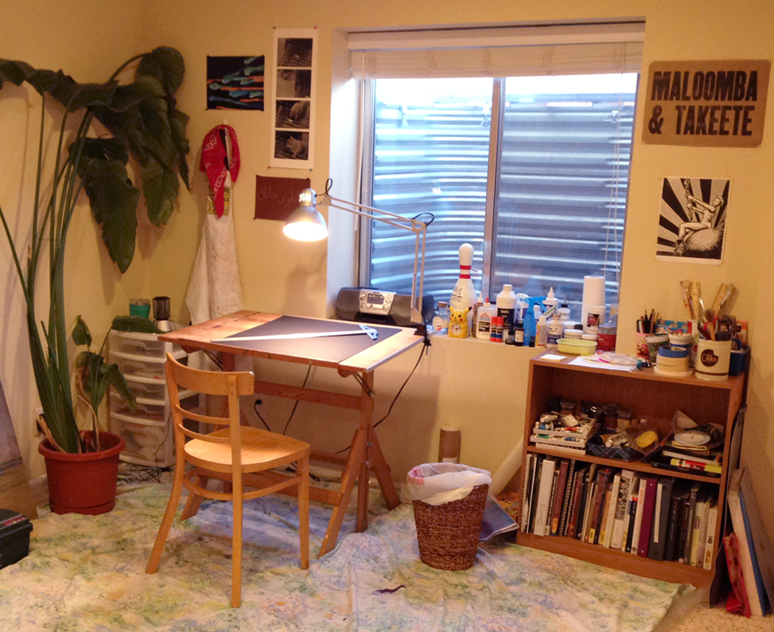

My name is Taylor Hayek, and I am currently majoring in Communication Design at Metropolitan State University of Denver. Thank you for visiting my portfolio, that I built from scratch using Brackets and Bootstrap. I like to try a little of everything when it comes to art, whether it's painting, making 3D peices, designing, or drawing. My real passion lies in illustration, and I hope that someday I can publish my work as a childrens book illustrator. If you look around, you can probably tell I also have a love for using animalia as my art subjects.
The name "Plaidtastico" Starts from my early days of posting and improving my work through art sites, where people called me "Plaid" based on my username. The name stuck, and later evolved into the title you see today.
Please contact me if you have any questions pertaining to my work!